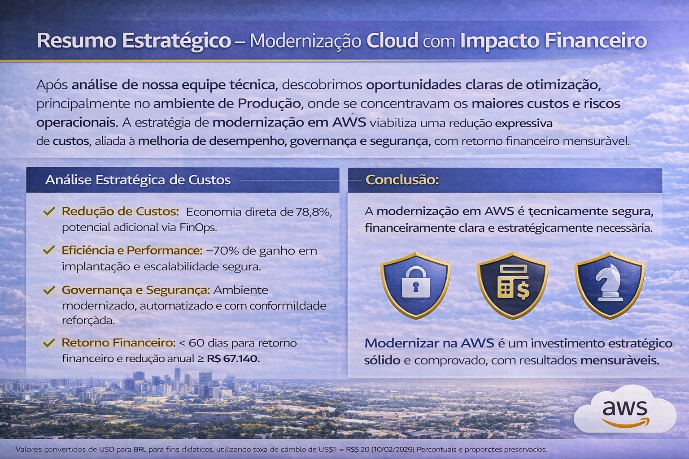

Cloud Engineer | Backend APIs
Engenharia de TI com foco em Cloud Computing, DevOps e automação de infraestrutura, atuando em projetos com AWS, Terraform, CI/CD e integração de APIs backend para construção de ambientes escaláveis, seguros e resilientes. Experiência com Infraestrutura como Código (IaC), automação de deploy e integração contínua, apoiando a modernização de aplicações e a melhoria da eficiência operacional. Valorizo aprendizado contínuo, colaboração entre equipes e compartilhamento de conhecimento, contribuindo para ambientes de engenharia mais eficientes e sustentáveis.
API backend para simulação de alertas de fraude utilizando arquitetura cloud e boas práticas de APIs REST.
Ver arquiteturaAmbiente de armazenamento cloud inspirado em Nextcloud utilizando infraestrutura provisionada com Terraform.
Ver arquiteturaPipeline de processamento de dados utilizando S3, Lambda e banco de dados RDS.
Ver arquiteturaProjetos com foco em arquitetura escalável utilizando serviços cloud como EC2, S3, RDS, Lambda e VPC.
